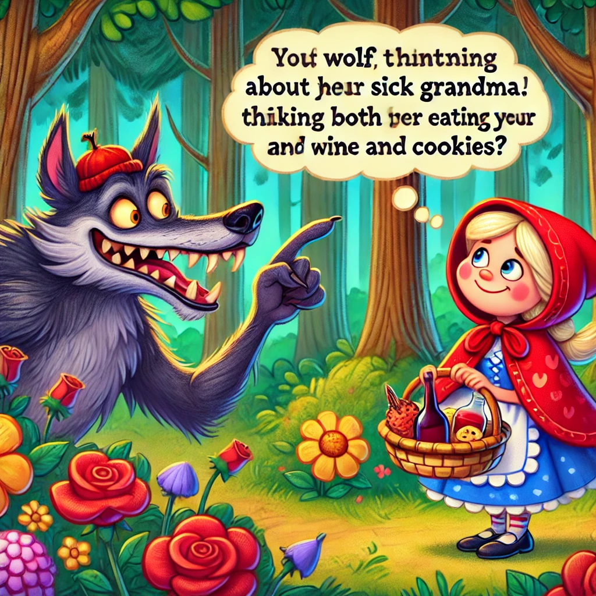
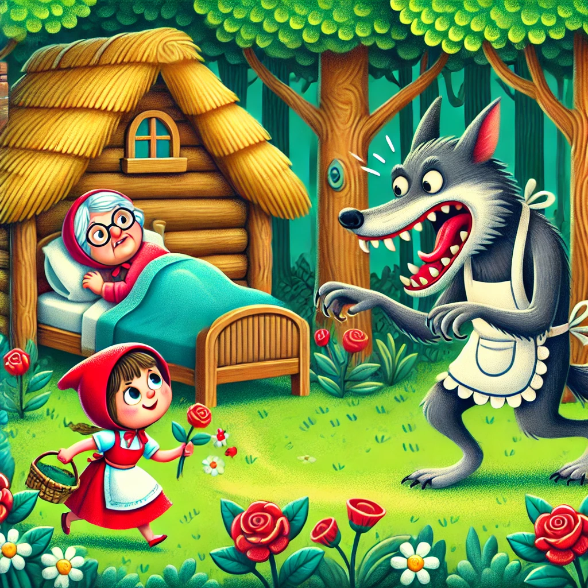

Había una vez una dulce niña. Todo el mundo la quería. Sobre todo su abuela. Así que un día le regaló un sombrero de terciopelo rojo. La niña siempre llevaba el sombrero y desde entonces la llamaban Caperucita Roja.

Un día su abuela estaba enferma. Así que Caperucita Roja fue a llevarle vino y galletas. Seguro que así se sentiría mejor. Su madre le dijo que no se saliera del camino y que tuviera cuidado. También tenía que ser educada y despedirse de la abuela.

Caperucita Roja prometió hacerlo y siguió su camino. La abuela vivía en lo más profundo del bosque, a más de media hora de camino del pueblo. En el bosque, Caperucita Roja se encontró con un lobo. Ella no sabía que era peligroso. Así que no tuvo ningún miedo.

“Buenos días Caperucita Roja”, dijo el lobo. “Voy a llevarle a la abuela vino y galletas porque está enferma”, dijo Caperucita. “¿Dónde vive tu abuela?”, preguntó entonces el lobo. “A menos de media hora en el bosque, en la cabaña bajo los tres grandes robles”, dijo Caperucita. El lobo, mientras tanto, estaba pensando en algo totalmente distinto: que Caperucita Roja era un buen bocado tierno y que probablemente sabría incluso mejor que la dura abuela. Si fuera inteligente, podría comerse a las dos. Así que el lobo se acercó y dijo: “Mira qué flores tan bonitas. ¿No quieres mirarlas un poco?”
Caperucita Roja quería elegir un bonito ramo para la abuela. Todavía era temprano, así que tenía mucho tiempo. Así que dejó el camino y se adentró cada vez más en el bosque. Mientras tanto, el lobo se dirigió directamente a la casa de la abuela y llamó a la puerta. “¿Quién está ahí?” “¡Caperucita Roja con vino y galletas, abre!” “Entra. No puedo levantarme”, dijo la abuela. Cuando el lobo estuvo dentro, saltó a la cama y….se comió a la abuela de un tirón. Luego se puso el camisón, el gorro de dormir y se metió en la cama con las cortinas cerradas.
Cuando Caperucita Roja llegó a la cabaña con los brazos llenos de flores, se sorprendió al encontrar la puerta abierta. Dentro, todo parecía muy extraño. Se asustó, pero no sabía por qué. “Buenos días”, dijo Caperucita, pero nadie respondió. Entonces abrió las cortinas. En la cama yacía la abuela, pero tenía un aspecto muy extraño con su gorro de dormir sobre la cara. “Oh, abuela”, dijo, “qué orejas tan grandes tienes”. “Para escucharte mejor, hija mía”, fue la respuesta. “Pero, abuela, qué ojos tan grandes tienes”, dijo. “Para verte mejor, querida”. “Pero, abuela, qué manos tan grandes tienes”. “Para abrazarte mejor”. “Oh, pero, abuela, qué boca tan grande tienes”. “Para comerte mejor”. El lobo saltó de la cama y se tragó a Caperucita Roja. Con la barriga tan llena, durmió a pierna suelta y roncó como un rey.
Pasó un cazador. Pensó: “Esa anciana está roncando muy fuerte. Iré a echar un vistazo”. Vio al lobo y dijo: “Así que aquí estás, anciana pecadora. Llevo mucho tiempo buscándote”. Quiso disparar al lobo con su rifle, pero de repente se dio cuenta de que el lobo podría haberse comido a la abuela. Quién sabe, tal vez podría salvarla. Abrió la barriga del lobo dormido con unas tijeras e inmediatamente vio un gorro rojo. La niña saltó y lloró: “Tenía tanto miedo en la barriga del lobo. Estaba taaaan oscuro allí”. Y después, la anciana abuela salió también viva, pero sin apenas poder respirar. Entonces el cazador llenó de piedras la barriga del lobo. Cuando el lobo se despertó, quiso huir. Pero las piedras lo detuvieron. Cayó al suelo y no volvió a despertarse. El cazador, la abuela y Caperucita Roja estaban contentos. El cazador se llevó la piel del lobo a casa. La abuela se bebió el vino, se comió todas las galletas y pronto se sintió mucho mejor. Y Caperucita Roja se dijo: “No volveré a salir del camino del bosque mientras viva y siempre escucharé a mi madre”.